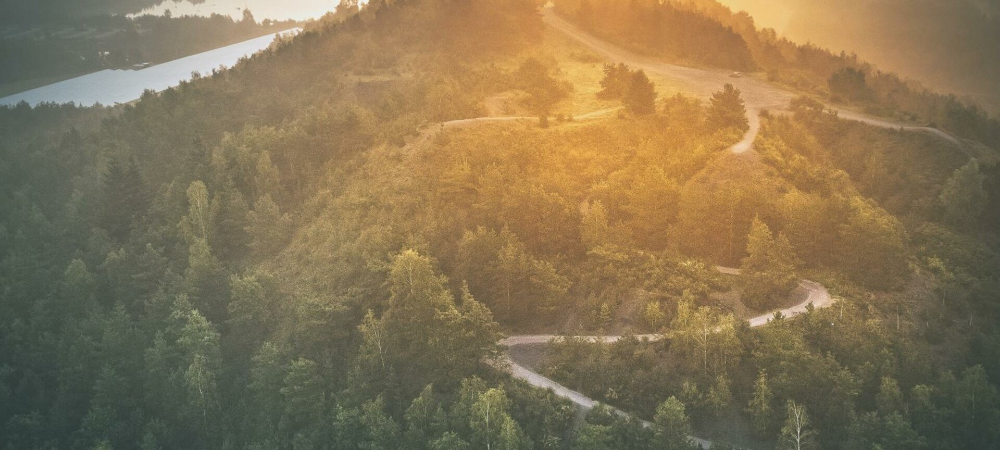

Natur
Eines der bekanntesten Naturschutzgebiete in Belgien ist der Hoge Kempen Nationalpark. Der Park erstreckt sich über 57 km² und besteht aus Heidelandschaften, Wäldern, Flüssen und Seen. Es ist auch ein beliebtes Wander- und Radfahrgebiet und bietet viele markierte Wanderwege und Fahrradrouten.
